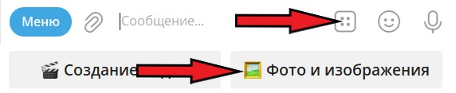
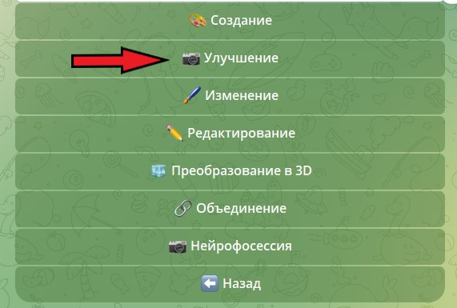
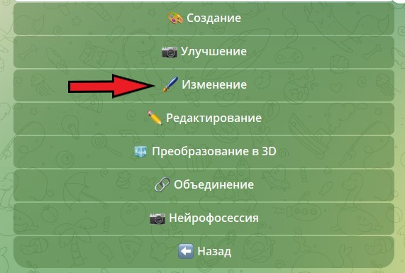
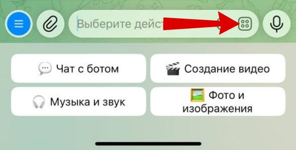

В нашем боте вы можете улучшать фотографии различными способами. Ниже мы расскажем как включать эти инструменты, где посмотреть примеры и как работают некоторые из них.
Для выбора инструментов для работы с изображениями нажмите на кнопку «🌄 Фото и изображения», расположенную под полем для ввода текста.

Все инструменты обработки изображений делятся на 6 разделов. Вам нужно нажать кнопку «📷 Улучшение».

После нажатия этой кнопки появится меню с кнопками для активации нужного инструмента. Чтобы посмотреть, как работает каждый инструмент, с примерами до и после обработки, нажмите на кнопку «👀 Как это работает?» в конце списка.
Нажимая на кнопки в данном меню, вы активируете нужный инструмент. После активации вы можете отправлять ваши фотографии как файл (без сжатия). Для этого нажмите на иконку «Скрепка», затем на кнопку «Файл», а потом — «Галерея» или «Файловое хранилище» и выберите нужную фотографию. После отправки изображения нужно подождать от нескольких секунд до нескольких минут, и вы получите обработанное изображение.
Чаще всего пользователи нашего бота улучшают старые фотографии. Давайте на примере нескольких фотографий посмотрим, как это можно сделать.
Если ваша старая фотография имеет дефекты в виде царапин, потертостей, рваных участков или грязи, используйте инструмент «Убрать дефекты».
Нажатием на кнопку активируйте данный режим и загрузите фотографию как файл. Через несколько секунд вы получите обработанное изображение. Вот примеры его работы:
Если инструмент «Убрать дефекты» оставит какие-то дефекты, что бывает крайне редко, или в случаях, когда вы не хотите удалять все дефекты, а только некоторые, воспользуйтесь инструментом «Удаление объектов». Он находится в разделе «Изменение».

Данный режим работает с помощью редактора, который открывается по нажатию соответствующей кнопки после активации режима. В редакторе вам необходимо закрасить область с дефектом, который вы хотите убрать, и отправить задание в работу.
Вот как это делается в редакторе:

А вот что получилось:
Кроме этого, для улучшения старых фотографий вы можете использовать режим «Восстановление».
Он полностью прорабатывает изображение, убирает дефекты и делает его цветным, но иногда результат может быть не очень похож на оригинал, особенно в случаях, когда внешний вид людей нечеткий. Вот примеры его работы: